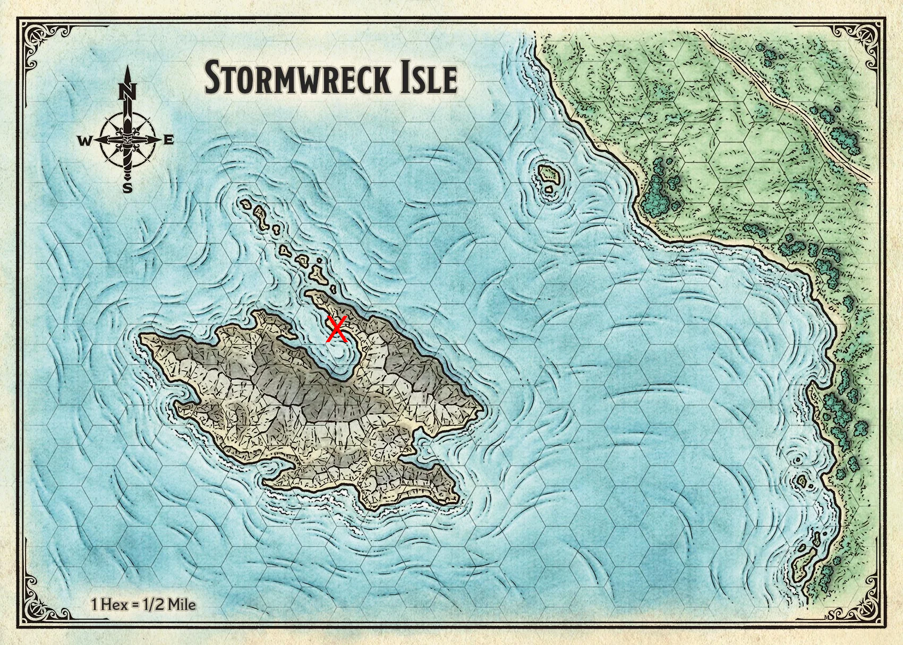
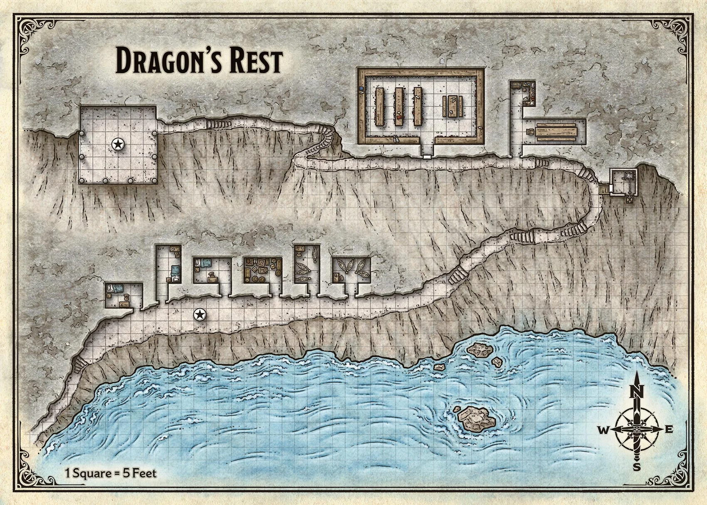

Dragon's Rest
Location

Information
A long path leads from the rocky shore up the side of the cliff, with occasional stairs to ease the ascent. Here and there along the lower part of the path, well-tended garden plots hold flowers, herbs, and vegetables.
About thirty feet above the bay, the path widens into a long plaza. Halfway along the plaza, a stone statue of a dragon gazes serenely down the path. Six open doorways are cut into the cliff side.

Notable locations
Statue
A dragon named Astalagan in his human form. Astalagan died on these cliffs centries ago
Winch house
A small, free-standing building halfway up the path has a peaked roof and a weathered wooden door. A sturdy wooden pallet wrapped with rope hangs beneath the building on an iron chain, lying flat against the cliff face.
Kitchen
A doorway in the rock opens into a dining room with a long table. Two benches run the length of the table, and a single chair sits at the table's head. A short hallway connects to a small, tidy kitchen.
Library
Of all the doorways cut into the cliff face, only this one has an actual door.
- No knowledge of how the inside looks like
- [(Humanoid) Elder Runera] does not like outsiders within the library
Temple of Bahamut
The highest point of the cloister is crowned by an open-air temple that overhangs the cliff, supported by arched stone struts anchored to the cliff face. The north wall of the temple is carved directly into the rock, while the rest is open to the sea air. Heavy pillars mark the three open sides, supporting the wooden roof.
In the center of the temple stands a statue of Bahamut in his human form, surrounded by seven canaries that represent gold dragons who accompany him on his travels.